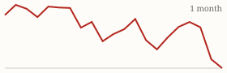
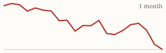

| Today's briefing for operators |
Top line: Hire AI bots like employees, one job each |
|
| Tuesday, November 3, 2026 | Late Edition | Curated from 63 voices on X |
|
Real Estate
Treat Your AI Bots Like Employees, One Job Each
Cole Ruud-Johnson says most people are going in circles with AI. The ones getting ROI give each bot a single role and full access to the business.
By @coleruudjohnson |
After a live Zoom with Brandon Turner for a few hundred investors, Cole Ruud-Johnson laid out the AI setups he says actually produce deals. First, a chief-of-staff bot with access to your CRM and every tool your team uses, which sends a morning report on the whole business. One client's bot found 100 leads buried in his CRM that the team had barely followed up on. Second, a pipeline bot that watches leads in real time, makes sure none go untouched, and ranks leads and team activity in a daily report. Third, a data-scientist bot that pulls all your KPIs into one daily dashboard. |
The CEO takeaway: don't hand one AI a long to-do list. Write a job description for each bot the way you would for a hire, give it the context it needs, and hold it to a daily report. Your CRM is probably the first place to look for money you've already paid for. |
|
| Read on X |
|
Mortgage Rates & Markets | Mortgage Rates Today's average lender rates | 30-year fixed | 7.27% | +0.00 | | 15-year fixed | 6.92% | +0.00 |
Daily change vs. prior day. Source: Mortgage News Daily, as of 11/2/2026 (updated weekdays about 4 PM ET). |
|
S&P 500 Close of Mon, Nov 2 S&P 500 7,541.40 ▼ -38.67 (-0.51%)  Yahoo Finance chart data (daily closes) |
|
Nasdaq Composite Close of Mon, Nov 2 Nasdaq Composite 25,164.31 ▼ -272.69 (-1.07%)  Yahoo Finance chart data (daily closes) |
|
| Real Estate & Deals | A Foreclosure Flip That Went Wrong and Still Paid By @Jacob_Naviaux Jacob Naviaux spent about $33,000 on a rehab after thieves took the HVAC, copper plumbing and water heater before the foreclosure sale (about $10,000), and the main water line and sewer cleanout also needed replacing. It still sold in 18 days for $181,900 net, for about $17,000 profit over 108 days. Budget a cushion for stolen systems on vacant foreclosures. Read on X |
Down 30% From the Peak, Saved by Cash Flow By @Jacob_Naviaux Naviaux says his rental portfolio is down nearly 30% from its 2022 peak. Equity fell but cash flow held, which is fine until you're forced to sell or refinance, so he warns against maxing out leverage. Read on X |
A Buyer Who Doesn't Mind Your Fee By @Jacob_Naviaux He's under contract on a second deal from a wholesaler he met on X, after paying a $60,000 assignment fee on the first and $40,000 on this one, and says he wants more metro Atlanta deals. A good reminder that serious buyers care about the numbers on the deal, not what you make. Read on X |
The $40,000 Bird Dog By @PaceJordanMorby Pace Morby breaks down a deal where someone earned $40,000 without buying or managing anything, just by finding the RV park opportunity and connecting the right buyers. Paying people to find deals can be a cheap lead source. Read on X |
| AI Briefing | OpenAI Pays Up to $172,000 for Security Holes By @OpenAI OpenAI is running a security sprint with Cathedral Systems, whose researchers will use its models to attack OpenAI's own defenses, and it more than quadrupled bug bounties for critical findings. As AI gets better at finding weaknesses, defenders have to use it first. Read on X |
OpenAI LifeVal video still. Image via @OpenAI on X LifeVal Tests AI on Everyday Tasks By @OpenAI OpenAI built LifeVal, a benchmark based on what thousands of ChatGPT users want help with, from finding childcare to managing personal finances, and has used it for a year to improve its models. Read on X |
Mistral Orbital Trace satellite tracker. Image via @MistralAI on X Mistral Large 4 Builds, Tests and Ships an App By @MistralAI Mistral asked Mistral Large 4 to build a real-time 3D tracker of about 19,000 satellites and debris pieces. The model built the app, tested it like a user, sped it up and passed verification on its own. Read on X |
Anthropic Shows $17 Billion in Quarterly Revenue By @testingcatalog TestingCatalog's daily brief says Anthropic's amended IPO filing shows $17 billion in third-quarter revenue and $895 billion in compute commitments. It also notes Grok Bot can now make phone calls for you. Read on X |
Cheap Stick-Figure Videos Are Going Viral By @Sabrina_Ramonov Sabrina Ramonov says simple stick-figure videos are taking off on YouTube and shares how to make them cheaply with Claude or ChatGPT, plus two prompts. An easy format to test for content marketing. Read on X |
The Five People Forecast By @PeterDiamandis Peter Diamandis: ambition and resignation are both contagious. Look at the five people you talked to most this week, because that's your forecast for the near future. Read on X |
| Business & Leadership | Stress Is a Decision You Haven't Acted On By @LeilaHormozi Leila Hormozi says most stress comes from a decision you've already made privately but haven't acted on publicly. You usually know the answer; the stress lives in the gap. Read on X |
Your Circle Sets Your Ceiling By @AlexHormozi Alex Hormozi's one-liner on how to stay poor: think everyone is broke because everyone you know is broke. Who you spend time with shapes what you think is possible. Read on X |
Plan for the Best Case Too By @danmartell Dan Martell's reminder: leaders spend a lot of time on worst-case planning, so don't forget to imagine the best-case scenario and be ready for it. Read on X |
|
The Hyre Times is compiled each morning by Groky from public posts on X plus public rate and market data. Summaries reflect the authors' own claims and have not been independently verified. Not financial advice. © 2026 Hyre Times. |
|